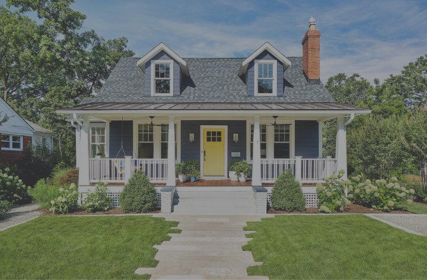
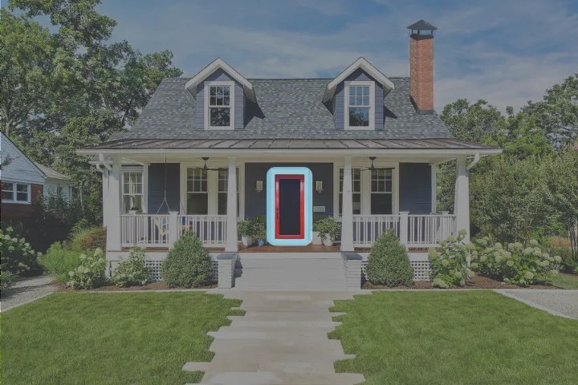

<mdb-carousel [isControls]="false" class="carousel" [interval]="2000" [animation]="fade">

  <mdb-carousel-item>
    
  </mdb-carousel-item>
  <mdb-carousel-item>
    
  </mdb-carousel-item>
  <mdb-carousel-item>
    
  </mdb-carousel-item>
  <mdb-carousel-item>
    
  </mdb-carousel-item>

</mdb-carousel>

<div class="col-12 d-flex justify-content-around" style="z-index: 2; margin-top: -90px;" >
  <a (click)="caro.selectSlide(1)" class="btn mikesBlueBtn">Screens</a>
  <a (click)="caro.selectSlide(2)" class="btn mikesBlueBtn">Window </a>
  <a (click)="caro.selectSlide(2)" class="btn mikesBlueBtn">Chimney</a>
  
</div>